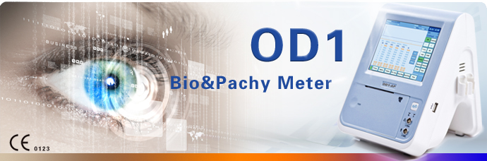

- info@electromed.com.co
- (57) 318 649 6540
- Cll 106 #14B-50

Equipos Oftalmológicos

OD1
A - Scanner
Características
- Biómetro.
- Sonda A de 10.0MHz.
- Resolución 0.01mm.
- Precisión ~0.02mm.
- Ganancia ajustable 0-120dB.
- Modos de examinación: Normal, Aphakic, Pseudophakic y dense cataract.
- Adaptador
- Bloque gauge para calibración.
- Pantalla táctil con lápiz
- Batería ion-litio (opcional).
- Cargador de Batería. (opcional).
- Pedal Switch (opcional).
Parámetros
- Paquímetro.
- Sonda angulada de 20MHz.
- Resolución: 1um.
- Precisión: ~5um.
- Adaptador.
- Bloque gauge para calibración.
- Pantalla táctil con lapicero.
- Batería ion-litio (opcional).
- Cargador de Batería. (opcional).
- Pedal Switch (opcional).

ODU5
AB - Scanner
Características
- Sonda B mecánica de 10MHz.
- Sonda A de 10MHz.
- Cable de Red.
- Batería de Ion-Litio (opcional).
- Switch Ethernet (opcional).
- Cargador de Batería (opcional).
- Switch de pedal (opcional).
Parámetros
- Pantalla LCD de 10.4 pulgadas libre de destellos.
- Lenguaje inglés.
- Doble ranura de sondas.
- Sonda modo A: 10MHz con luz fija.
- Sonda modo B: 10MHz transductor.
- Modos de muestra: B, B/B, 4B, B/A, A.
- Ganancias de hasta 120dB.
- Escala de 256 tonalidades de grises.
- Disco interno de 4GB.
- Funciones de reportes.
- Fuente de poder 110~220v.
- Salida a TV PAL/NTSC.
- Peso 8Kg.

ODU8
AB - Scanner
Características
- Sonda B mecánica de 10MHz.
- Sonda A de 10MHz.
- Calibración.
- Grabadora de video (opcional).
- Impresora láser (opcional).
- Switch de pedal (opcional).
Parámetros
- Lenguaje inglés.
- Ranura doble de sondas: sonda modo A (10MHz + Luz fija), sonda modo B (10MHz + transductor).
- 256 tonalidades en escala de grises.
- Disco interno de 4GB.
- Pantalla LCD de 15 pulgadas libre de destellos.
- Funciones de reportes.
- Salida a TV PAL/NTSC.
- Precisión de ~0.02mm.
- Cálculos de desviación estándar.
- Fuente de poder 110~220v.
- Peso 8Kg.